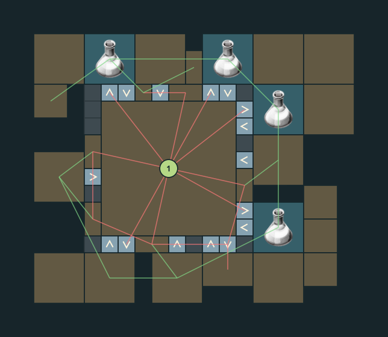

Long game flight plans and strategies
SPACE LAUNCH · 21 NOVEMBER 2026 · EXACT SAVED LAYOUT
White-pack platform · 60/min in Nauvis orbit
A space platform blueprint for Nauvis orbit: four asteroid collectors, one crusher, one electric furnace and four assembling machine 2 make 60 space science packs per minute and keep them in the hub. Paste it on a platform made from one starter pack; the platform asks rockets for exactly its own parts.
Native platform test passed · Passing full-protocol evidence matches this exact import and prototype.
17 × 16 rectangle · 247 foundation tiles (147 beyond the starter square) · 44 entities including the hub · 4 asteroid collectors · 1 crusher · 1 electric furnace · 4 assembling machine 2 · 6 solar panels · 4 accumulators · no modules
← Space launch path · Open in the library
Import & build
- Build the rocket silo inside a roboport network with logistic robots, and keep the starter pack and the platform parts in passive provider chests in that network (the launch kit's chests are). Tick “Automatic requests from space platforms” on the silo once: it then takes its cargo from the logistic network, and cargo cannot be put in by hand while it is on.
- On the silo click “Build new space platform”; in “New space platform” choose Nauvis as the planet and the space platform starter pack, then Create. The starter pack flies first.
- Copy the import string and paste it anywhere on the platform. It contains the hub, so it snaps to the real hub. Do not use grid snapping.
- Keep the hub’s “request missing construction materials” on (the blueprint sets it). The platform then asks rockets for exactly 4,000 kg and builds itself. In a save that has never created a platform, the asteroid collector and crusher recipes unlock only now, so the last cargo rocket waits until the kit has made them.
- Build the white-pack receiver on Nauvis; packs come down with no click.


Schematic of the saved entity positions on their foundation tiles (grey squares). Arrows show direction, dashed pale lines join underground belts, gold lines are power wires and red/green lines are circuit wires. Blue markers are entrances, green markers are outputs, P is electricity.
Complete import string · manual offline copy
Inputs
No supplied inputs. The four asteroid collectors catch chunks in Nauvis orbit, which sends only chunks, never asteroids, so the platform needs no defence. The crusher's recipe is set by the circuit clock (oxide, metallic, carbonic in turn). Steady flows inside, measured: 24 iron ore, 12 carbon, 12 ice and 24 iron plates per minute.
Power: 6 solar panels and 4 accumulators. Measured average 943.02 kW, peak 1625.64 kW, lowest accumulator 4.66 of 5 MJ, 0 low-power ticks.
Outputs & measured results
| Output | Where | Cap | Target / min | Made / min | Collected / min | Recovery made / min |
|---|---|---|---|---|---|---|
![]() Space science pack Space science pack | Hub · (0, 0) | 2000 (ceiling 2100) | 60 | 60 | 60 | 60 |
Collected is what reached the receiver's chest on Nauvis. With the chest not emptied, the chest stopped at 2000, the pad at 1000 and the hub at 2060 packs, and no pack was crafted in the hold. Built from ghosts in 10 s; first pod 66.63 s after the build.
Protocol: One end-to-end run on map seed 12345: a real platform from a starter pack in Nauvis orbit, only the platform request placed in the hub, the blueprint pasted as ghosts and built by the hub, natural chunks only. 60 min warm-up, 120 min measured, 105 min blocked with a 15-minute hold, 60 min recovery (last 45 measured). A second run, the rocket-delivery check, used a real silo with chests holding exactly the starter pack and the platform request.
Setup notes
- Factorio 2.1.24 Space Age, normal quality. Stationary in Nauvis orbit, no thrusters, no fuel, no defence (Nauvis orbit sends only small chunks). Makes 60 space science packs per minute from asteroid chunks and keeps them in the hub (stops at 2000); a cargo landing pad on Nauvis that requests packs receives them by itself. 4 asteroid collectors (one per side), 1 crusher (its recipe set by the circuit clock: oxide, metallic, carbonic in turn), 1 electric furnace, 4 assembling machine 2, 6 solar panels, 4 accumulators. Paste it anywhere on a platform made from one starter pack: it snaps to the hub. Keep the hub's "request missing construction materials" on: the platform then asks rockets for exactly 4000 kg (4 full rockets). Keep the wires: hub contents on red to the conditioned arms and the negating combinator; chunk values (6 each) and the crusher clock on green; the crusher's recipe signals on their own red wire.
- Paste the blueprint anywhere on the platform: it contains the hub and snaps to the real hub. Do not use grid snapping.
- Keep the hub setting "request missing construction materials" on (the blueprint sets it). Without it the platform never asks for the parts.
- Rockets leave only when full (1,000 kg). The platform asks for exactly 4000 kg, which is 4 full rockets after the starter-pack rocket; any change to the bill must keep a whole number of rockets.
- Tick "automatic requests from space platforms" on the rocket silo once.
- Packs reach the ground through the white-pack receiver (a landing pad that requests space science packs); no click is needed after it is built.
Rockets
The platform asks for exactly 4,000 kg: 4 full cargo rockets after the starter pack's own rocket, 5 launches in all. Rockets leave only when full (1,000 kg). The rocket-delivery check measured 5 launches and a finished platform 13.48 minutes after an empty start.
| # | Cargo, as launched in the rocket-delivery check | kg |
|---|---|---|
| 1 | 1 × space platform starter pack | 1,000 |
| 2 | 50 × space platform foundation | 1,000 |
| 3 | 50 × space platform foundation | 1,000 |
| 4 | 1 × arithmetic combinator, 1 × constant combinator, 4 × accumulator, 1 × electric furnace, 1 × assembling machine 2, 37 × space platform foundation, 1 × crusher | 1,000 |
| 5 | 16 × fast inserter, 5 × decider combinator, 6 × solar panel, 3 × assembling machine 2, 4 × asteroid collector | 1,000 |
Each rocket takes 50 rocket parts: 50 × processing unit, 50 × low density structure, 50 × rocket fuel. The whole campaign uses 250 × processing unit, 250 × low density structure, 250 × rocket fuel.
Reproduce
From factorio-command-center/ in the source repository:
export FACTORIO_RAW=<Factorio 2.1.24 Space Age data-raw-dump.json>
node scripts/white-platform/generate.mjs # writes the platform string and manifest
node scripts/white-pack-receiver/generate.mjs
node --test tests/white-platform.test.mjs tests/white-pack-receiver.test.mjs
node scripts/white-platform/validate.mjs # one end-to-end run qualifies the platform and the receiver; needs a local Factorio 2.1.24 install, headless with a private profile under .cache/white-platform/Construction, machines & exact identity
Construction materials · entity counts
| Entity | Count |
|---|---|
| Accumulator | 4 |
| Arithmetic combinator | 1 |
| Assembling machine 2 | 4 |
| Asteroid collector | 4 |
| Constant combinator | 1 |
| Crusher | 1 |
| Decider combinator | 5 |
| Electric furnace | 1 |
| Fast inserter | 16 |
| Solar panel | 6 |
| Space platform hub | 1 |
| Space platform foundation (tiles) | 247 |
Machines per saved recipe
| Recipe | Machines |
|---|---|
| Space science pack | 4 |
Blueprint SHA-256: 0bed64aac34ad341799b26411c021e46b11f071656196ddeb1c53ae070713604
Prototype SHA-256: ce40aee67d984865f22ed8e65ba6b93fefb014fc35e45b747b64aca3ed5682a3